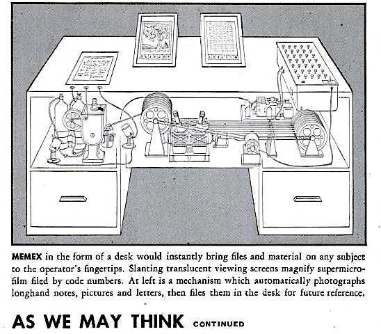
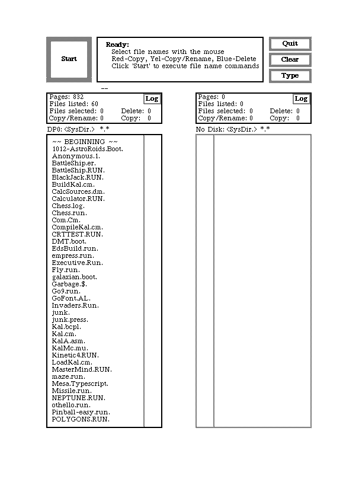
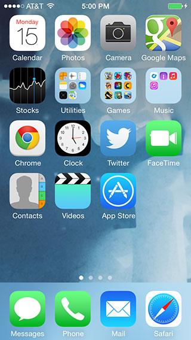
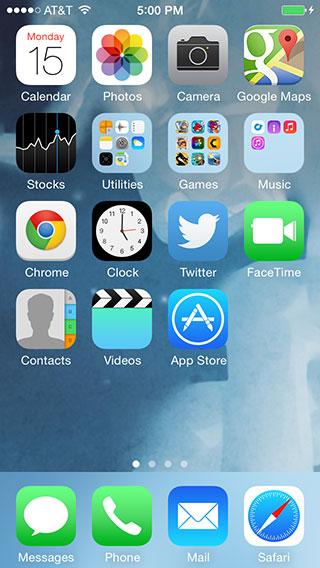
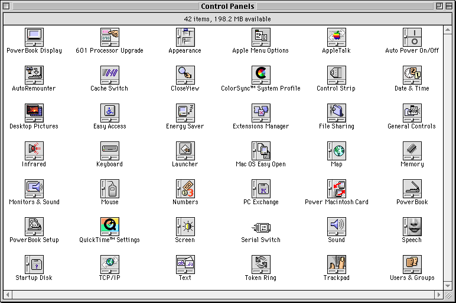
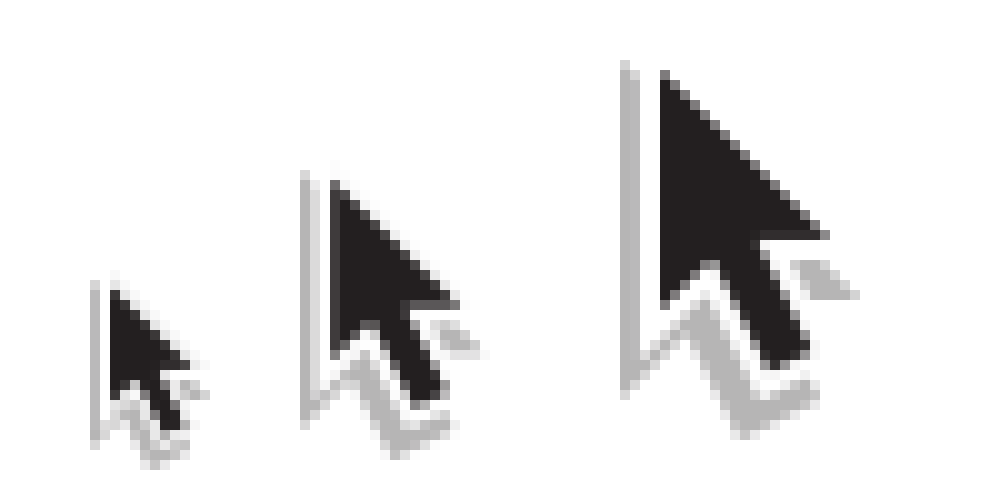

Icons and the Web
betravis / bear_travis
About Me
What is an Icon?
Icons are visual metaphors that help users navigate an interface.
What problems do icons solve?

1945 Vannevar Bush Memex

1973 Xerox PARC Alto
 1984 Apple Macintosh

2013 iOS 7
1984 Apple Macintosh

2013 iOS 7
Icons can help users navigate an interface
but they can be confusing if not readily understood.

Mac OS 8
Icons should help guide a user.
Icons on Screens
The challenge
Icons have to communicate an idea clearly
in a limited amount of visual real estate.
16 x 24 icon

Ideal

Pixels
Vector
Raster

16x24, 24x36, 32x48
icon on 20 x 20 grid
result of 0.5px offset
The bad news
Icons may lose clarity when working with anything other than the exact pixels.
High resolution displays make these issues less visible.
Responsive icon design
image of iconic mic
Performance
Easy to use
icon { icons: url('default.icons'); }
picture of a raster icon at large
But you're loading multiple resources!
Summary
- Pixel-level control
- Browser support
- Fixed size
<i class='icon-book'></i>
Summary
- Same pros and cons as image resources
- But with single resource load

f
f
f
and well supported
table of browser support
Characters to Glyphs
Considerations
- Accessibility
- Browser support
- Fallbacks
f
Unicode PUA

fish fish
cloud
Support
|
IE |
FF |
CR |
S |
O |
iOS |
A |
| ASCII |
5 |
32 |
37 |
7 |
24 |
7.1 |
|
| PUA |
9 |
32 |
37 |
7 |
24 |
7.1 |
|
| Ligatures |
10 |
32 |
37 |
7 |
24 |
7.1 |
|
Cloud
– falls back to –
Cloud
Summary
Support

 +
+
 +
+
 +
+
 =
=